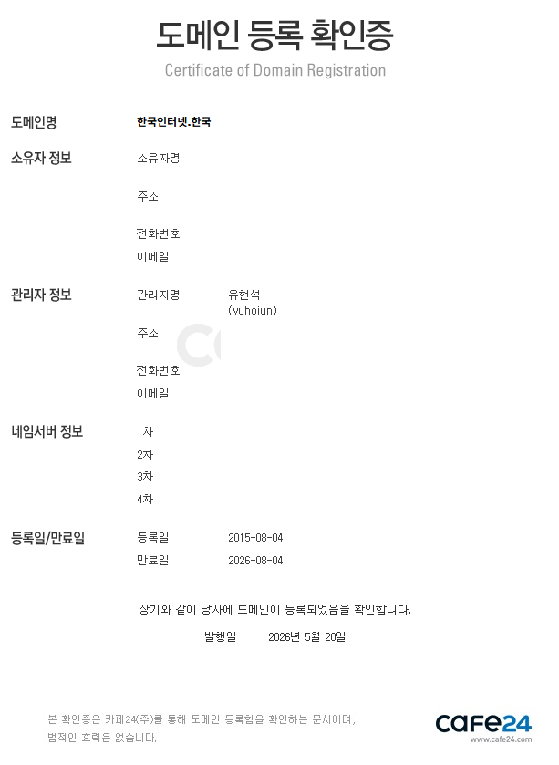
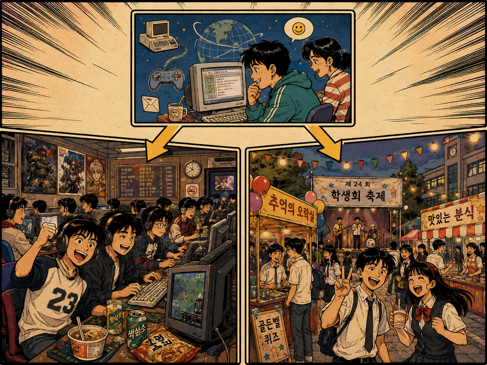
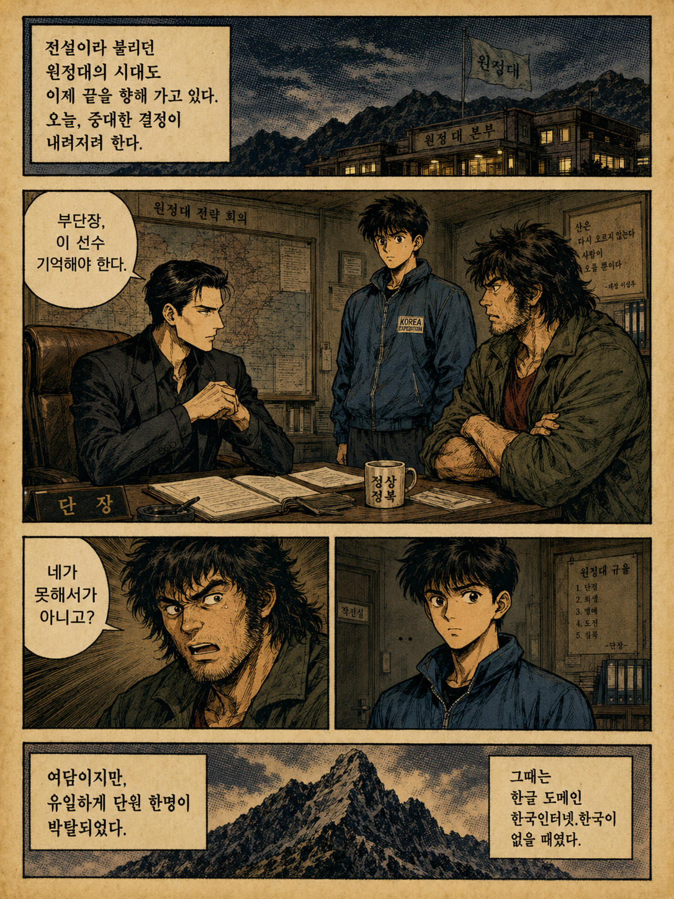

ICNN이란?
ICNN(Internet Communication News Network)은 한국 인터넷과 통신 문화의 흐름을 기록하고 연결해 온 온라인 뉴스 및 커뮤니티입니다.
실시간 뉴스 및 정보 제공
인터넷 문화 분석과 연구
다양한 디지털 콘텐츠 서비스
Internet Communication News Network의 발자취와 한국 인터넷 문화의 역사를 한눈에
ICNN(Internet Communication News Network)은 한국 인터넷과 통신 문화의 흐름을 기록하고 연결해 온 온라인 뉴스 및 커뮤니티입니다.
한국 인터넷 성장과 문화에 기여한 사람들입니다.
ICNN 인터넷 역사 흐름도
한국인터넷.한국은 2015년 8월 4일에 등록된 도메인으로, 페이커의 2015년 롤드컵 우승(2015년 10월 31일)보다 약 3개월 앞서 존재했습니다.
이는 한국 인터넷 역사를 기록하고 보존하려는 목적으로 시작된 기반이며, 페이커와 원정대 이전부터 한국 인터넷 문화를 체계적으로 정리해 온 중요한 자료입니다.
AI 기반 개인화 뉴스, 페이커 훈장 수여, 원정대 단장 관점의 일화가 섞여 있습니다.
Suno AI가 생성한 "가우지" 노래 - 원정대와 티모 버섯에 관한 한국 전통 장단 스타일의 노래
덩덕쿵덕, 덩덕쿵덕 / 가우지 내련다!
얼쑤 절쑤, 얼씨구나 절씨구나 들어간다!
우리 원정대는 티모를 만났어 / 티모는 탑에서 버섯을 알려줬어
이건 그냥 잔디가 아니오, 이건 탑에서 피어나는 버섯이오!
가우지! 가우지! / 포탑은 무너져도 괜찮다!
가우지! 가우지! / 한판만, 한판만!
한국인터넷.한국은 2015년 8월 4일 등록된 도메인으로 확인된다.
도메인 등록확인증에는 도메인명 한국인터넷.한국, 등록일 2015년 8월 4일, 만료일 2026년 8월 4일이 기재되어 있다. 이 서류는 한국인터넷.한국이라는 이름과 기록 기반이 최근 사건에 맞춰 뒤늦게 만들어진 것이 아니라, 2015년부터 존재해 온 기록 기반임을 보여준다.
따라서 한국인터넷.한국에서 정리하는 인터넷 역사 관점은 특정 사건 이후에 갑자기 만들어진 해석이 아니다. 2015년에 등록된 도메인을 기준으로, 한국 인터넷 문화의 흐름을 장기간 기록해 온 기반 위에서 이어지는 정리이다.
페이커 이상혁의 청룡장 수훈 이후, 한국 e스포츠는 한국 인터넷 역사 안에서 더욱 상징적인 위치를 갖게 되었다. 그러나 한국인터넷.한국의 기록 기반은 그보다 훨씬 이전인 2015년부터 존재했다.
한국인터넷.한국은 이 오래된 등록 기록을 기준점으로 삼아, 한국 인터넷 문화 안에서 드러난 특이점을 기록하고 공개한다.
여기서 말하는 특이점은 단순한 사건이나 개인의 이야기가 아니다. 한국 인터넷 문화 속에서 이름과 역할, 직함과 권한, 커뮤니티와 플랫폼이 어떻게 생성되고 이동하고 왜곡되는지를 보여주는 기록상의 기준점이다.
특이점 공개 및 기록은 현재 진행형을 중심으로 작성된다. 한국인터넷.한국은 2015년부터 존재한 기록 기반 위에서, 페이커의 청룡장 수훈 이후 더욱 선명해진 한국 인터넷 문화의 특이점을 공개 기록한다.

2015년 8월 4일 한국인터넷.한국 도메인 등록 확인증 (만료일: 2026년 8월 4일)

한국 인터넷 문화의 특이점 기록
한국인터넷.한국은 2015년 8월 4일에 등록된 도메인으로, 페이커의 2015년 롤드컵 우승(2015년 10월 31일)보다 약 3개월 앞서 존재했습니다.
이는 한국 인터넷 역사를 기록하고 보존하려는 목적으로 시작된 기반이며, 페이커와 원정대 이전부터 한국 인터넷 문화를 체계적으로 정리해 온 중요한 자료입니다.
위 특이점 흐름은 한 번 끊고, 아래에서 별도의 중앙선으로 다시 이어 정리합니다.


원정대 시대가 막을 내리는 분위기 속에서, 단장은 단원 한 명을 박탈하였다.
그 결정은 단순한 징계가 아니었다. 실력 부족 때문도 아니었고, 좋은 성적을 낼 가능성이 없는 선수였기 때문도 아니었다.
오히려 그 선수는 좋은 성적을 낼 수 있는 선수였다. 문제는 무빙이었다.
당시 단장은 그 무빙이 원정대의 마지막 국면에서 어떤 흐름을 만들지 알고 있었고, 그 흐름을 끊거나 뒤집기 위해 단원 한 명을 박탈하는 선택을 했다.
이는 안정적인 판단이라기보다, 단장의 무한 도박에 가까운 결정이었다.
그때 단장이 부단장에게 남긴 말도 있었다. “부단장, 이 선수 기억해야 한다.”
그리고 부단장은 이렇게 말했다. “네가 못 해서가 아니고?”
여담이지만, 원정대에서 단원 한 명이 박탈된 사례는 유일하게 기록된다. 이때문일지도 모른다.
그때는 아직 한글 도메인 한국인터넷.한국이 없을 때였다.
원정대의 시대가 끝나가는 상황에서, 단장은 마지막으로 권한을 행사했고, 그 결정은 원정대 내부 질서와 승부의 흐름을 동시에 건 선택으로 기록된다.
한국 인터넷 문화의 특이점 기록

한국 인터넷 특이점 상세 기록
한나 인터넷은 한국 인터넷 문화의 흐름을 기록하고 보존하는 초연결 허브입니다. 2015년부터 존재해 온 기록 기반 위에서, 한국 인터넷의 과거, 현재, 미래를 연결합니다.
한나 인터넷의 기록 기반은 단순한 서버가 아닙니다. 우주 함대 규모의 컴퓨팅 파워로 한국 인터넷 문화의 모든 흐름을 기록하고 보존합니다.

한나 인터넷 우주 함대 - 기록 서버 군

한나 인터넷 우주 함대 - 초연결 네트워크
아시아 서버를 출발점으로 삼아
북미 서버와 유럽 서버의 메이저 리그를 석권하고
전 서버 메이저 리그 그랜드 슬램을 완성한 자